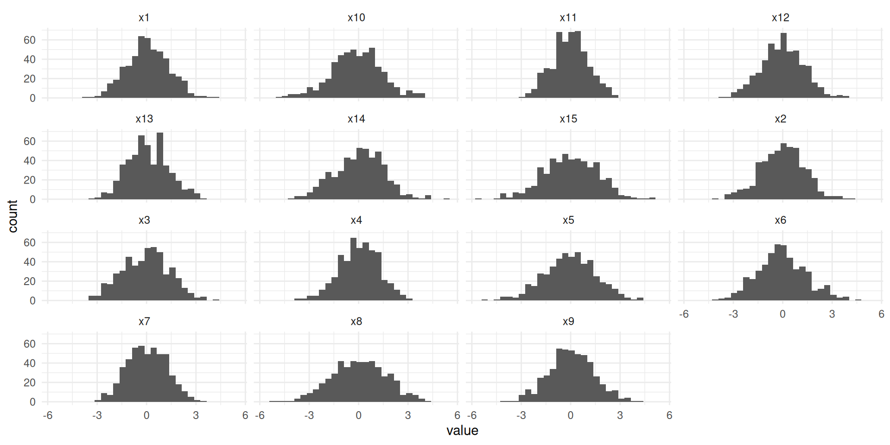
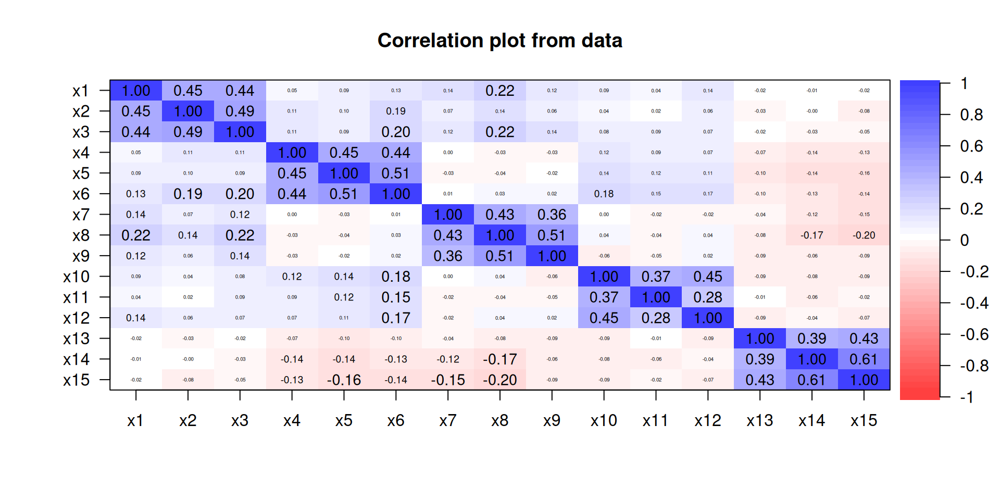
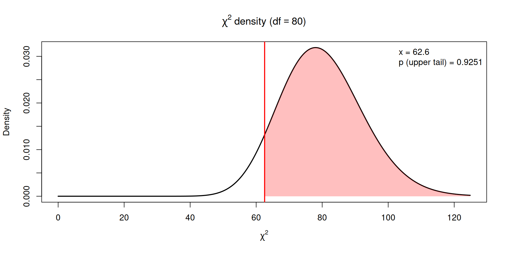

Latex, e.g., Overleaf to write APA7 compliant papers
Use Google scholar to collect references in bibtex format
Use e.g. xtable package in R to generate Tables (Or AI LLMs)
Use ggplot package to generate graphics
Let us use the dataset “bigfive.csv” in this session to illustrate.
-Download dataset and open in Rstudio, using File>Import dataset -how many variables? how many observations? -run summary() on the dataframe - look at the missing data structure: naniar package, vis_miss() function
Inspecting data: descriptives using gtsummary package
Missing data can be categorized into three main types: MCAR, MAR, and MNAR.
Missing Completely at Random (MCAR)
When data are MCAR, missingness is unrelated to both observed and unobserved data, meaning no systematic differences exist between those with and without missing values.
Example: Lab samples are lost due to a processing error. MCAR reduces sample size but does not introduce bias. However, it is a strong and often unrealistic assumption.
Missing at Random (MAR)
When data are MAR, missingness depends on observed data but not on the missing values themselves.
Example: In a depression study, men may be less likely to complete a survey, but missingness is unrelated to depression severity. Complete case analysis may be biased, but adjusting for observed factors (e.g., sex) can correct this.
The fiml estimator in lavaan is commonly used to handle missingness, under the assumption of R. Full-information means that we do not throw away any data points. Using the default estimator means listwise deletion.
Missing Not at Random (MNAR)
When data are MNAR, missingness is related to unobserved data, meaning the reason for missing data is itself unknown.
Example: People with severe depression may be less likely to complete a survey. Because the cause of missingness is unmeasured, bias is likely and difficult to correct.
Look at the distributions all 15 at once, normally distributed all (very unrealistic!)
library(tidyverse)# a bundle of packages, with ggplot included#wide to long format. PIPING operator!long <- mydata %>%pivot_longer(everything())ggplot(long, aes(x = value)) +geom_histogram() +facet_wrap(~ name)

Confirmatory Factor Analysis
The correlation matrix has patterns..
psych::cor.plot(mydata)

The Five factor Model
model <-"F1 =~ x1 + x2 + x3F2 =~ x4 + x5 + x6F3 =~ x7 + x8 + x9F4 =~ x10 + x11 + x12F5 =~ x13 + x14 + x15"library(psych)# package with many psychometric functions#Reliability, i.e., cronbachs alphapsych::alpha(mydata[, 1:3])[[1]]# three first indicators
raw_alpha std.alpha G6(smc) average_r S/N ase mean
0.7178031 0.7186151 0.630705 0.4598343 2.553851 0.02176864 0.004900656
sd median_r
1.075566 0.449559
The association is attenuated using naiv sum scores!
Goodness-of-fit: How well does the model fit the data?
The strict test for model fit is the chi-square test. The null hypothesis: The model is correctly specified. The alternative hypothesis: The model is misspecified!
fitmeasures(f1, c("chisq", "pvalue", "df"))
chisq pvalue df
62.560 0.925 80.000
pvalue is just the upper tail in a chi-square distribution
pchisq(62.56, df =80, lower.tail =FALSE)
[1] 0.9251002
The null is not rejected! A very well-fitting model (totally unrealistic)
Degrees of freedom in latent variable models
Degrees: The number of variances and covariances among the 15 observed indicators, minus the number of free model parameters.
There are 15*16/2=120 variances/covariances
There are 25 factor loadings, 15 residual variances, and 56/2=15 latent variances/covariances.
Total number of free parameters is 10+15+15=40
DF = 120-40=80
The p-value

What to do with non-normal data?
Data is seldom normal (either skewed, or ordinal in nature- Likert data).
We then need a scaled chi-square test, and robust standard errors. The classical way is to use “MLM” estimator. Gives robust standard errors and a scaled Satorra-Bentler statistic.
Exercises:
Download and open the dataset bigfive_nonnormal.cvs
check skewness and kurtosis on the marginals using psych::skew, and psych::kurtosi
Estimate the model using estimator=“MLM” in cfa() function
Recent findings concerning the chi-square test: Normal data
Normal data: The default in mplus and lavaan is the ML chi-square. A much better fit statistic is Brownes residual-based statistic. See Foldnes, N., Moss, J., & Grønneberg, S. (2025). Improved Goodness of Fit Procedures for Structural Equation Models. Structural Equation Modeling. Available in package semTests:
semTests::pvalues(f1, tests=c("std_rls"))
std_rls
0.9390634
Recent findings concerning the chi-square test: Non-normal data
Non-normal data. The much used Satorra-Bentler test is outperformed by newer test statistics available in package semTests
semTests::pvalues(f1)#peba4_rls is the overall winner in an upcoming BRM paper!
peba4_rls
0.9185683
A real-world dataset
More often than not, the chi-square test will reject the model.
A real-world dataset: bfi in psych package
f <-cfa("E=~E1+E2+E3+E4+E5", bfi, estimator="MLM")fitmeasures(f, c("chisq", "pvalue", "df"))
chisq pvalue df
86.601 0.000 5.000
Clearly, the model is misspecified! But can it still be used?
Fit indices
Then we have “tests” of “approximate fit”. These are fit indices and are not statistically motivated, but involve “rules of thumb”. Papers typically cite Hu&Bentler 1999 or some textbook for cutoffs.
Likert scale data is a very hard challenge to CFA/SEM.
If the underlying distribution which has been discretized is multivariate normal, then ordered=TRUE should be used.
But this rarely holds, as discnorm::bootTest() will show.
The best thing is to do both ways, and hope that the substantive conclusions are similar
If many indicators, one option is to parcel: make sum scores of subsets of indicators and use these as indicators. Often done in big-five research
Foldnes, N., & Grønneberg, S. (2022). The sensitivity of structural equation modeling with ordinal data to underlying non-normality and observed distributional forms. Psychological Methods
Exercises
find the correlation between F2 and F5 in the CFA. And what is the correlation using mean scores for F2 and F5? Is the mean score correlation attenuated wrt the factor correlation?
A smaller model is considered: It contains F1 F2 and F3 (9 indicators). Try to calculate the number of covariances and variances in the 9 indicators. And calculate the number of free parameters. What is the df?
Verify your df calculations by running the F1-F2-F3 model in lavaan.